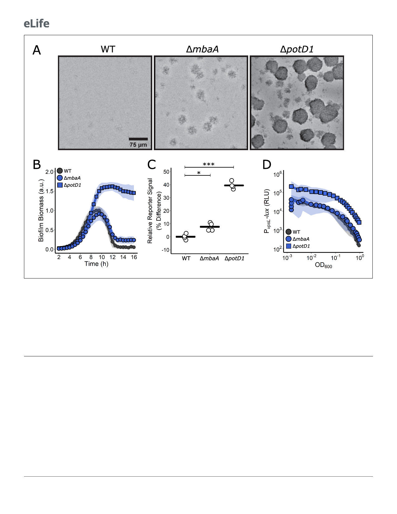

Research article
Microbiology and Infectious Disease
Figure 2. Polyamine signaling regulates V. cholerae biofilm dispersal. (A) Representative images of the designated V. cholerae strains at 16 hr. (B)
Quantitation of biofilm biomass over time measured by time-lapse microscopy for WT V. cholerae and the designated mutants. In all cases, N = 3
biological and N = 3 technical replicates, ± SD (shaded). a.u.: arbitrary unit. (C) Relative c-di-GMP reporter signals for the indicated strains. Values are
expressed as the percentage difference relative to the WT strain. N = 4 biological replicates. Each black bar shows the sample mean. Unpaired t-tests
were performed for statistical analysis, with p values denoted as *p<0.05; ***p<0.001. (D) The corresponding PvpsL-lux outputs for the strains and
growth conditions in (B). For vpsL-lux measurements, N = 3 biological replicates, ± SD (shaded). RLU: relative light units.
The online version of this article includes the following figure supplement(s) for figure 2:
Figure supplement 1. mbaA and potD1 complement the DmbaA and DpotD1 mutants, respectively.
Figure supplement 2. c-di-GMP signaling controls biofilm dispersal.
In V. cholerae, increased cytoplasmic c-di-GMP levels are associated with elevated extracellular
matrix production (called VPS for vibrio polysaccharide) and, in turn, increased biofilm formation.
Using a PvpsL-lux promoter fusion that reports on the major matrix biosynthetic operon, we previ-
ously showed that matrix gene expression decreases as cells transition from the biofilm to the plank-
tonic state, suggesting that repression of matrix production genes correlates with biofilm dispersal.
We wondered how the increased c-di-GMP levels present in the DmbaA and DpotD1 mutants
impinged on vpsL expression. Using the vpsL-lux reporter, we found that the light production pat-
terns mirrored the severities of the dispersal phenotypes and the magnitudes of changes in cyto-
plasmic c-di-GMP levels: the DmbaA mutant had a light production profile similar to WT, while the
DpotD1 mutant produced 10-fold more light than WT throughout growth (Figure 2D). These results
indicate that the DmbaA mutant makes normal levels and the DpotD1 mutant produces excess
matrix.
5 of 20